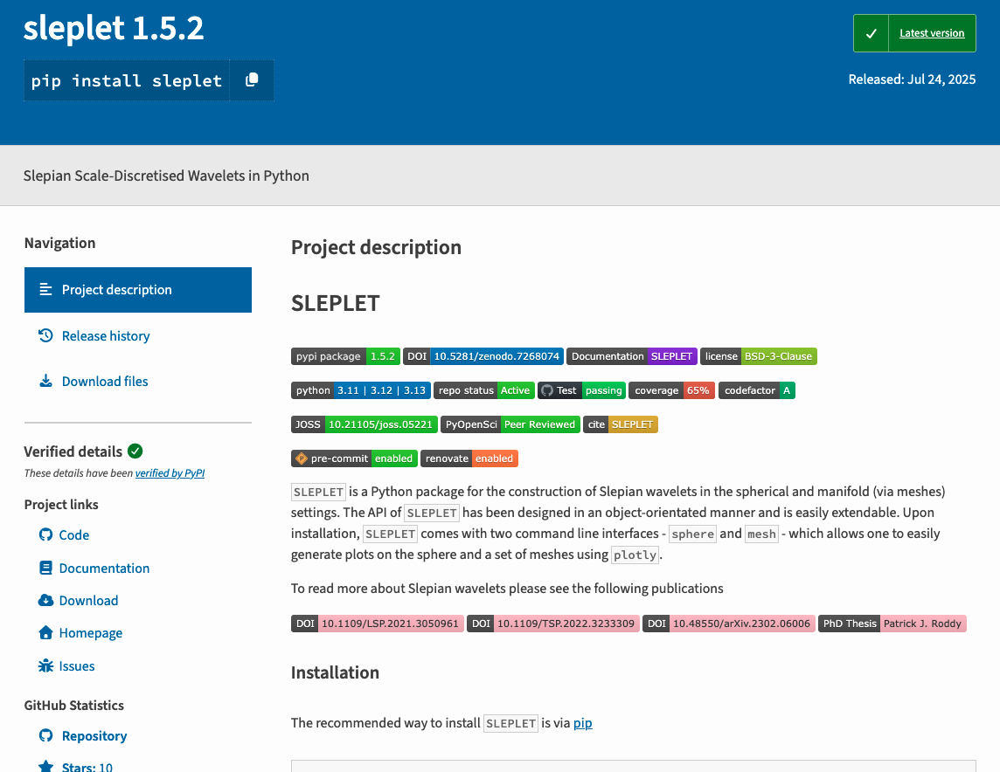
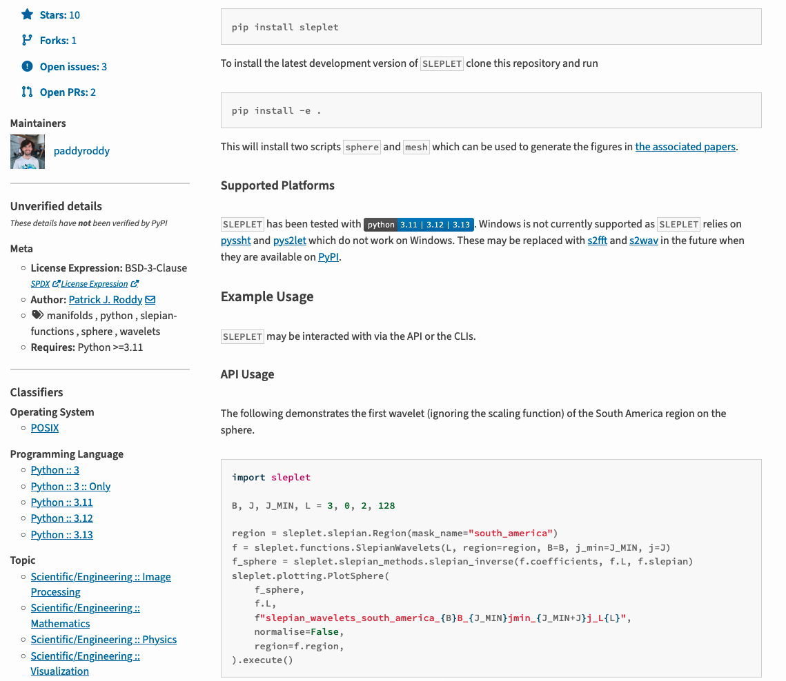

Python Packaging
UCL Hawkes Institute: Reproducible Analytical Pipelines
2026-02-26
Introduction
What is a Python Package
- A Python package is a toolbox that can be used to perform a variety of tasks.
- A directory with a specific file structure.
- The directory has modules (
.pyextension). - Modules allow one to group and structure Python code.
- Modules contain functions and classes.
Python Packages are Installable
- Allows one to add functionality within the package’s code to any Python environment.
- Packages can then simply be imported (
import numpy). - Installing a package into an environment enables re-use across projects.
- Structuring code as a package is the first step.
Why Create a Python Package
- Use your code across different projects:
- Allows one to install code into any Python environment.
- Can import functions and classes into any workflow.
- Build community around your code:
- Packages make it easier for others to work on it.
- Version control (
git) makes it easy to track changes and contribute. - Tools such as issues and pull requests aid outside users to contribute.
Why Create a Python Package
- Share your code:
- Can be installed on any machine using a single command (
pip/conda).
- Can be installed on any machine using a single command (
- Organise your code:
- Packages can help organise large code projects.
- Smaller, more manageable components.
- Structure can help both supporting the codebase and making it easier to understand.
What to Consider Before Creating a Package
- Who will use your package?
- How people might use your project?
- If relevant, what data will be used with your package?
- Have you got documentation and tests?
- How long will you be able to support it?
The Elements of a Python Package
- Code: functions and classes that contain the functionality.
- Documentation:
- Installation instructions.
- Tutorials.
- Examples.
CONTRIBUTING.md.- Development documentation.
The Elements of a Python Package
- Tests: ensure code works as expected.
- Open source licence:
- Allows others to use your package.
- Provides legal direction.
- Infrastructure:
- Automate updates.
- Test suites.
- Release workflow.
Structuring Packages
Flat and Source Layouts
packaging_tutorial/
├── LICENSE
├── pyproject.toml
├── README.md
├── example_package/
│ ├── __init__.py
│ └── example.py
└── tests/packaging_tutorial/
├── LICENSE
├── pyproject.toml
├── README.md
├── src/
│ └── example_package/
│ ├── __init__.py
│ └── example.py
└── tests/LICENSE
Copyright (c) 2018 The Python Packaging Authority
Permission is hereby granted, free of charge, to any person obtaining a copy
of this software and associated documentation files (the "Software"), to deal
in the Software without restriction, including without limitation the rights
to use, copy, modify, merge, publish, distribute, sublicense, and/or sell
copies of the Software, and to permit persons to whom the Software is
furnished to do so, subject to the following conditions:
The above copyright notice and this permission notice shall be included in all
copies or substantial portions of the Software.
THE SOFTWARE IS PROVIDED "AS IS", WITHOUT WARRANTY OF ANY KIND, EXPRESS OR
IMPLIED, INCLUDING BUT NOT LIMITED TO THE WARRANTIES OF MERCHANTABILITY,
FITNESS FOR A PARTICULAR PURPOSE AND NONINFRINGEMENT. IN NO EVENT SHALL THE
AUTHORS OR COPYRIGHT HOLDERS BE LIABLE FOR ANY CLAIM, DAMAGES OR OTHER
LIABILITY, WHETHER IN AN ACTION OF CONTRACT, TORT OR OTHERWISE, ARISING FROM,
OUT OF OR IN CONNECTION WITH THE SOFTWARE OR THE USE OR OTHER DEALINGS IN THE
SOFTWARE.README.md
Python Files
src/example_package/__init__.pysrc/example_package/example.pytests/A placeholder for test files.
pyproject.toml
pyproject.toml is a configuration file used by packaging tools, and other tools such as linters, type checkers, and so on. This file can contain three possible TOML tables.
- The
[build-system]table is recommended. It allows one to declare the build backend to use. - The
[project]table specifies the project metadata and dependencies. - The
[tool]table has tool-specific subtables (e.g.[tool.ruff]).
Build Backend
The [build-system] table has a build-backend key that specifies the build backend to be used. The requires key includes a list of dependencies required to build the project.
Dynamic Metadata
Most of the time static metadata can be written directly in the [project] table. For example, requires-python = ">= 3.10" or version = "1.0".
However, it is best when possible to set this metadata dynamically. One can automate the __version__ attribute by using the following.
Basic Information
name: The name of the project on PyPI. Required field and cannot be made dynamic.version: The version of the project.
Dependencies and Requirements
Dependencies are specified as follows.
Optional dependencies are further specified as follows.
Dependencies and Requirements
Optional dependencies can be installed by specifying the name in square brackets:
pip install example-project[gui].A new feature exists dependency groups which is for optional dependencies that are only intended for development (linters, testing, …).
The minimum Python version to support is specified as:
Executable Scripts
A
spam-clicommand can be made using the following:On Windows, scripts sometimes require the following command instead:
Project Metadata
authors/maintainersdescription
Project Metadata
readmeLicences should be declared using the following two fields.
keywords
Project Metadata
classifiers[project] classifiers = [ # How mature is this project? Common values are # 3 - Alpha # 4 - Beta # 5 - Production/Stable "Development Status :: 4 - Beta", # Indicate who your project is intended for "Intended Audience :: Developers", "Topic :: Software Development :: Build Tools", # Specify the Python versions you support here. "Programming Language :: Python :: 3", "Programming Language :: Python :: 3.10", "Programming Language :: Python :: 3.11", "Programming Language :: Python :: 3.12", "Programming Language :: Python :: 3.13", ]
Project Metadata
urls
Full Example
[build-system]
build-backend = "hatchling.build"
requires = [
"hatchling",
]
[project]
authors = [
{email = "different.person@example.com"},
{email = "pradyun@example.com", name = "Pradyun Gedam"},
{email = "tzu-ping@example.com", name = "Tzu-Ping Chung"},
{name = "Another person"},
]
classifiers = [
"Development Status :: 4 - Beta",
"Programming Language :: Python",
]
dependencies = [
"django>2.0; os_name == 'nt'",
"django>2.1; os_name != 'nt'",
"gidgethub[httpx]>4.0.0",
"httpx",
]
description = "Lovely Spam! Wonderful Spam!"
gui-scripts = {spam-gui = "spam:main_gui"}
keywords = [
"Lobster Thermidor",
"bacon",
"egg",
"sausage",
"tomatoes",
]
license = "MIT"
license-files = [
"LICEN[CS]E.*",
]
maintainers = [
{email = "brett@example.com", name = "Brett Cannon"},
]
name = "spam-eggs"
optional-dependencies = {cli = [
"click",
"rich",
], gui = [
"PyQt5",
]}
readme = "README.rst"
requires-python = ">=3.8"
scripts = {spam-cli = "spam:main_cli"}
version = "2020.0.0"
entry-points."spam.magical" = {tomatoes = "spam:main_tomatoes"}
urls."Bug Tracker" = "https://github.com/me/spam/issues"
urls.Changelog = "https://github.com/me/spam/blob/master/CHANGELOG.md"
urls.Documentation = "https://readthedocs.org"
urls.Homepage = "https://example.com"
urls.Repository = "https://github.com/me/spam.git"Tools
[tool.check-manifest]
ignore = [
"*.cff",
"*.md",
"*.off",
"*.toml",
"src/sleplet/_version.py",
]
[tool.coverage]
report = {skip_covered = true, sort = "cover"}
run = {branch = true, parallel = true, source = [
"sleplet",
]}
[tool.mypy]
disallow_subclassing_any = false
disallow_untyped_decorators = false
enable_error_code = [
"ignore-without-code",
"redundant-expr",
"truthy-bool",
]
explicit_package_bases = true
ignore_missing_imports = true
plugins = [
"pydantic.mypy",
]
strict = true
warn_return_any = false
warn_unreachable = true
[tool.pytest.ini_options]
addopts = [
"--color=yes",
"--import-mode=importlib",
"--strict-config",
"--strict-markers",
"--verbose",
"-ra",
]
filterwarnings = [
"error",
]
log_cli_level = "INFO"
minversion = "6"
testpaths = [
"tests",
]
xfail_strict = true
[tool.ruff]
fix = true
force-exclude = true
src = [
"src",
]
lint.ignore = [
"COM812",
"D105",
"D203",
"D205",
"D212",
"D407",
"D413",
"ISC001",
"N803",
"N806",
]
lint.isort = {known-first-party = [
"sleplet",
], section-order = [
"future",
"standard-library",
"third-party",
"astro-info",
"first-party",
"local-folder",
], sections = {"astro-info" = [
"pys2let",
"pyssht",
]}}
lint.per-file-ignores = {"examples*" = [
"D100",
"INP001",
"T201",
], "src*" = [
"SLF001",
], "tests*" = [
"D100",
"INP001",
"S101",
"SLF001",
]}
lint.select = [
"ALL",
]
lint.mccabe.max-complexity = 18
lint.pep8-naming.classmethod-decorators = [
"classmethod",
"pydantic.field_validator",
]
[tool.setuptools_scm]
local_scheme = "no-local-version"
write_to = "src/sleplet/_version.py"
[tool.tomlsort]
overrides."project.classifiers".inline_arrays = false
overrides."tool.ruff.lint.isort.section-order".inline_arrays = falseSharing Your Package
TestPyPI
python3 -m pip install --upgrade buildpython3 -m buildThe
tar.gzfile is a source distribution whereas the.whl fileis a built distribution. Newerpipwill install the built distribution and only use the source as a fallback.Create an account on TestPyPI.
Set up API token and so on.
TestPyPI
python3 -m pip install --upgrade twinepython3 -m twine upload --repository testpypi dist/*Uploading distributions to https://test.pypi.org/legacy/ Enter your API token: Uploading example_package_YOUR_USERNAME_HERE-0.0.1-py3-none-any.whl 100% ━━━━━━━━━━━━━━━━━━━━━━━━━━━━━━━━━━━━━━━━ 8.2/8.2 kB • 00:01 • ? Uploading example_package_YOUR_USERNAME_HERE-0.0.1.tar.gz 100% ━━━━━━━━━━━━━━━━━━━━━━━━━━━━━━━━━━━━━━━━ 6.8/6.8 kB • 00:00 • ?python3 -m pip install --index-url https://test.pypi.org/simple/ --no-deps example-package-YOUR-USERNAME-HERE
PyPI
A similar set of steps can be done to upload to PyPI. TestPyPI allows one to test out their package. It is still public but much less obvious for people to look. People will often do these steps through GitHub Actions.
PyPI

PyPI

Conclusions
Resources
- Accessible guides: https://www.pyopensci.org/python-package-guide.
- More technical guides: https://packaging.python.org/en/latest/tutorials.
- Community recommended configuration: https://scientific-python.github.io/repo-review.
Resources
- ARC Guide
Summary
- What a Python package is and when to make one.
- How to structure your package.
- How to make a
pyproject.tomland the three different sections:[build-system],[project]and[tool]. - How to upload your package to TestPyPI and PyPI.
- Some resources including a tutorial to make your own package using the ARC cookiecutter.

Python Packaging